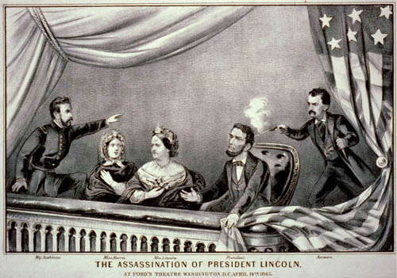
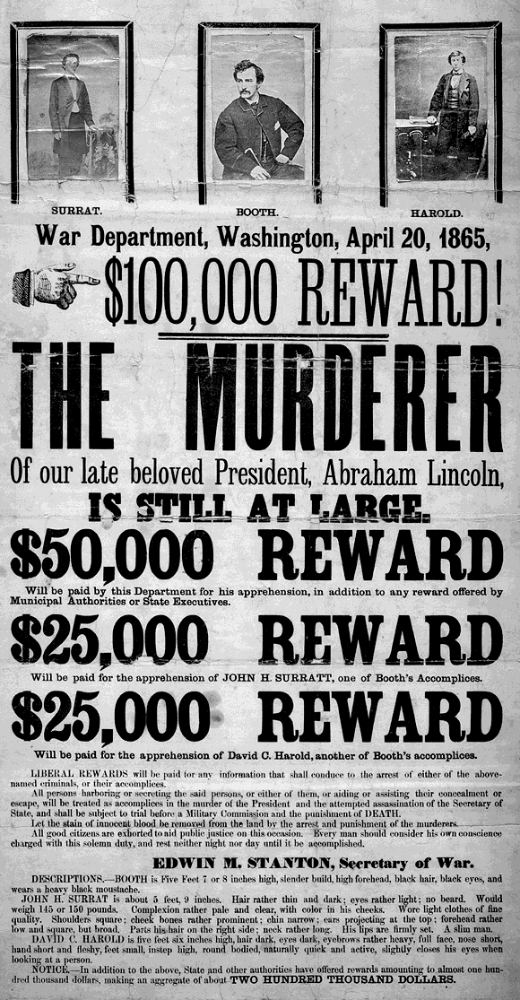

|
"Sic Semper Tyrannis!" These words, which translate as "Thus
Always with Tyrants," were spoken by Brutus as he
assassinated Julius Caesar in the play by William
Shakespeare. When famous actor John Wilkes Booth shouted the
phrase after leaping to the stage during a Ford's Theater
performance of Our American Cousin on April 14, 1865, most
of the audience assumed he was part of the cast. It was not
until he had disappeared into the wings that it became clear
that he had just shot President Abraham Lincoln.
The notion of Booth as an assassin was shocking to those
in the audience that night, many of whom had seen him
perform on that very stage. Indeed, the idea might even have
been shocking to Booth himself in the early years of the
Civil War. A Marylander, Booth was pro Southern from the
outset, describing slavery as "a blessing." In the early
years of the war, however, he was not especially devoted in
his commitment to the Confederacy. In deference to his

John Wilkes Booth
|
mother's wishes, he did not enlist in the Army, and his
actions on behalf of the cause were largely limited to
occasional smuggling of medical supplies from the North to
the South.
Over time, Booth's militancy grew, as did his desire to
do something dramatic to help the sagging fortunes of the
Confederacy. Finally, in summer of 1864, Booth came up with
a plan. During the summer months, Washington, D.C. was hot,
humid, and filled with mosquitoes. In order to escape the
miserable climate, President Lincoln was in the habit of
spending his nights at the Soldiers' Home on the outskirts
of the city. Booth hoped to capture Lincoln during one of
these trips, and take him hostage. In addition to creating
chaos in the North, Booth's hope was that he could exchange
Lincoln for Confederate prisoners of war, who were no longer
being exchanged for Union prisoners as a result of an April
1864 order by General Ulysses S. Grant.
Booth knew he needed accomplices, so he recruited two
childhood friends, Samuel Arnold and Michael O'Laughlin.
They readily agreed, and Booth began his scheming in
earnest. He also began to scout out escape routes through
Southern Maryland. In December of 1864, he met John Surratt,
who would prove to be a valuable ally. Surratt, like Booth,
was engaged in smuggling on behalf of the Confederacy, and
he was intimately familiar with the terrain between
Washington, D.C. and Virginia. He was also in contact with a
network of pro-Southern sympathizers, including David E.
Herold and George Atzerodt, both of whom quickly agreed to
be a part of the conspiracy. The number of participants grew
to seven in March of 1865 when Booth enlisted escaped
prisoner of war Lewis Powell, who preferred to use the alias
Lewis Paine. Booth even went so far as to arrange to have
his $15,000 theatrical wardrobe transported to the South,
making the assumption that he would resume his acting career
there after the kidnapping.
After more than six months of effort, Booth had made all
the necessary arrangements for the kidnapping plot, and he
had all the men he needed. By this time, however, summer was
long over, and the President no longer traveled back and
forth to the Soldiers' Home. Other attempts to catch the
President while vulnerable came to nothing. And so, toward
the end of March 1865, Booth gathered his co-conspirators
and proposed a new plan wherein the president would be
kidnapped while watching a play at Ford's Theater in
Washington. The idea was not well received, because the odds
of all seven men escaping successfully were very low. Booth
was unwilling to budge, and Samuel Arnold, Michael
O'Laughlin and John Surratt left the group.
Booth began to get desperate. He no longer had enough men
to pull off a kidnapping. On April 3rd, 1865, the
Confederate government fled Richmond, which meant that there
was nowhere to hold Lincoln hostage even if he was
kidnapped. On April 9th, the Army of Northern Virginia
surrendered, and Booth knew that time was quickly running
out for him to put a stop to Lincoln's "lawless tyranny." On
the morning of April 14th, he heard that the President would
be at the theater that evening. Booth concluded that this
was his last chance, and that since he lacked the resources
for a kidnapping, he would have to resort to murder.
Booth still had three co-conspirators left, and he found
roles for them to play on the evening of April 14th,
although he did not tell them until 8:00 p.m. that evening,
two hours before they were supposed to carry out their
assignments. Atzerodt was instructed to kill Vice-President
Andrew Johnson, while Paine was supposed to take the life of
Secretary of State William Seward. Herold, meanwhile, was
responsible for helping the mentally retarded Paine find his
way out of Washington. In the end, neither Paine nor
Atzerodt was successful. Paine inflicted several serious
stab wounds on Seward but failed to kill him, while Atzerodt
lost his nerve and never made an attempt to kill Johnson.
After giving Atzerodt, Paine, and Herold their
assignments, Booth headed over to Ford's Theater. He had no
difficulty gaining access to the President's box, due to his
|

An 1865 engraving captures the scene when
President Lincoln was shot. It is not entirely accurate; nobody
saw Booth prior to the shooting.
|
celebrity as an actor as well as lax security. Though
Lincoln had received many threats on his life, little was
done to ensure his safety. In part this was because an
earlier attempt to protect the President's life by sneaking
him into Washington before his inauguration had caused a
great deal of political embarrassment. And in part it was
because Lincoln felt that such protection was impractical.
Lincoln did have a personal bodyguard, Ward Hill Lamon,
but at Lincoln's request Lamon traveled to Richmond on the
night of the 14th. Mary Todd Lincoln selected a temporary
replacement from the ranks of the Washington, D.C. police
department, John H. Parker. Parker had a poor record, and
was known for laziness. Shortly after the play started, he
abandoned his post in order to watch the performance. Booth
proceeded without challenge to the President's box.
Booth waited for the big laugh coming at the beginning of
the third act that would cover the sound of the gunshot. He
observed Lincoln through a hole he had drilled in the door
of the President's box earlier in the day. When the moment
came, Booth entered the box and shot Lincoln in the back of
the head with a single-shot Derringer pistol. He scuffled
briefly with Major Henry Reed Rathbone, who had joined the
President's party at the last minute when General and Mrs.
Grant had decided not to attend the play. Booth then leapt
the twelve feet to the stage, breaking his leg in the
process, and made his exit.
After being shot, Lincoln was carried across the street
to the Peterson house. Dr. Charles Leale, who had been in
attendance at the play, attended Lincoln initially and was
eventually joined by several other surgeons, including
Lincoln's personal physician. They all realized there was
|

Reward poster seeking information
about the whereabouts of the assassins.
|
nothing that could be done. The President faded quickly and
died early on the morning of April 15th without regaining
consciousness. "Now he belongs to the ages," said Secretary
of War Edwin Stanton.
Booth fled Washington, trying to work his way South,
where he felt he would be hailed as a hero. He was badly
mistaken. People across the newly reunited nation mourned
Lincoln's death. Slowed by his broken leg, Booth was
eventually trapped in a Maryland farmhouse. After refusing
to surrender, he was shot and killed, never to answer for
his crime. A military tribunal tried eight of Booth's
alleged co-conspirators. The hastily conducted trial
resulted in death sentences for Herold, Paine, Atzerodt, and
Mary Surratt. Four others were sentenced to prison terms.
Many people thought the assassination a Confederate plot,
funded and supported by Jefferson Davis' Administration. In
the years after the trial, some have argued this point of
view, or else suggested that there was a conspiracy within
the Union itself. However, no compelling evidence exists
linking any person or group to the assassination besides
Booth and his three accomplices.
As a result of Lincoln's death, the work of
reconstructing the shattered nation was left to Vice
President Andrew Johnson, who was sworn in as president by
Chief Justice Salmon P. Chase several hours after the
assassination. Johnson proved to be ill equipped for the
task that Lincoln left behind. His mishandling of the
situation led to his impeachment, and allowed the Radicals
to gain control of Reconstruction policy. The result was a
difficult time in the political life of the nation that
might have unfolded in a very different fashion if Lincoln
had lived.
Source: Joan Waugh, ed., Facts on File Encyclopedia of American
History: Civil War and Reconstruction, 1856 to 1869 (New York: Facts on
File, 2003), 17-19.
|